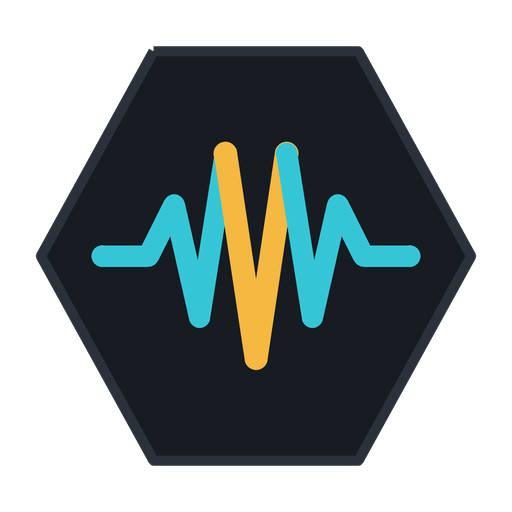

Dois canais, controle independente
VS num canal, click no outro. Fader separado para cada um, e duck para falar por cima do playback sem perder a referência. O app detecta sozinho qual lado é qual.

Playback ao vivo para músicos
Uma ferramenta de trabalho, não um player de música. VS num canal, click no outro, o show inteiro no pedal.

VS num canal, click no outro. Fader separado para cada um, e duck para falar por cima do playback sem perder a referência. O app detecta sozinho qual lado é qual.
Mãos no instrumento. Selecionar, tocar, pausar, duck, mute, fade — tudo por pedal. Comando fora de hora é ignorado em vez de derrubar o show.
Importar copia o arquivo para dentro do app, e a identidade vem do SHA-256 do conteúdo. Nada depende de uma pasta externa que alguém moveu na véspera.